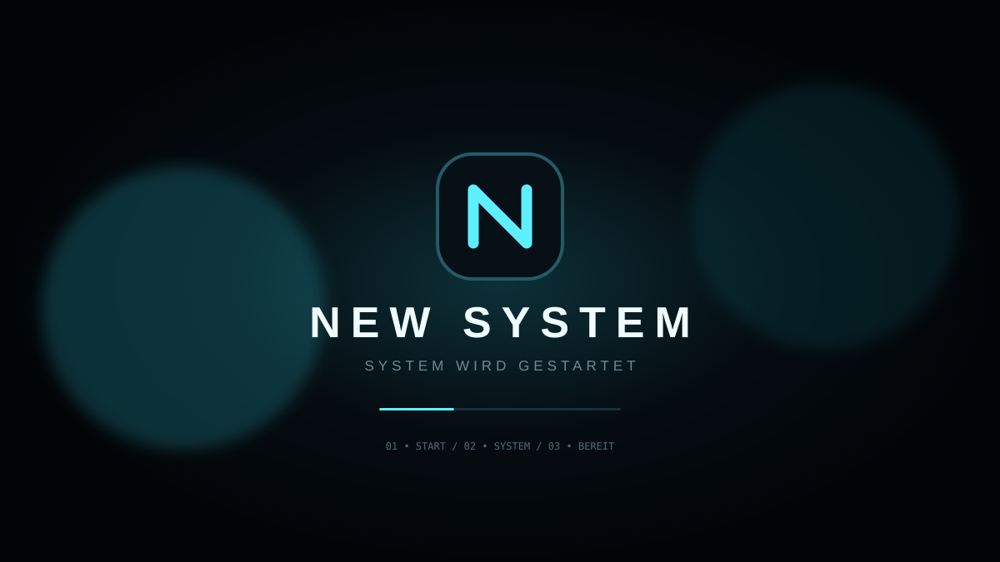

Schnelleinstellungen21:00
ANDROID-STYLE • DEUTSCH • INTERAKTIV
Dein eigenes
Dein eigenes
NEW SYSTEM.
Eine komplette, visuelle System-Oberfläche im Browser. Der Builder erzeugt die App-Oberfläche, Startsequenz, Systemseiten und App-Simulation direkt hier.
100% Browser-Prototyp0 SystemänderungenDE komplett deutsch
21:00▰ 100% ⌁
NEW
SYSTEM
SYSTEM
01 / BUILDER
Die App wird hier gebaut.
Ein Klick erzeugt die komplette sichtbare NEW-SYSTEM-Umgebung. Keine Installation, kein Wipe, kein Eingriff in dein Android.
NEW SYSTEM BUILDBEREIT
› Projekt geladen.
› Oberfläche bereit.
› Android-kompatible Struktur geplant.
› Warte auf Build …
✓ Startbildschirm
✓ App-Übersicht
✓ Schnelleinstellungen
✓ Dateien & Fotos
✓ Musik & Browser
✓ Einstellungen
✓ Akku / WLAN / Bluetooth UI
✓ Deutsche Oberfläche
02 / SYSTEM
Android-ähnlich. Voll interaktiv.
Systemstatus● LIVE
SpeicherIntern · verfügbar
Akku100%
NetzwerkVerbunden
SpracheDeutsch
03 / APPS
Alles, was du im System erwartest.
04 / START-VIDEO
So sieht der Start von NEW SYSTEM aus.
Die Animation ist direkt im Projekt enthalten und folgt derselben Startsequenz wie die Demo-App.

Diese Website kann nicht heimlich auf private Android-App-Daten zugreifen. Ein echter Android-Build kann später mit den erlaubten Android-APIs auf Fotos, Dateien, Apps und Gerätestatus zugreifen. Die Web-Demo verändert dein Tablet nicht.